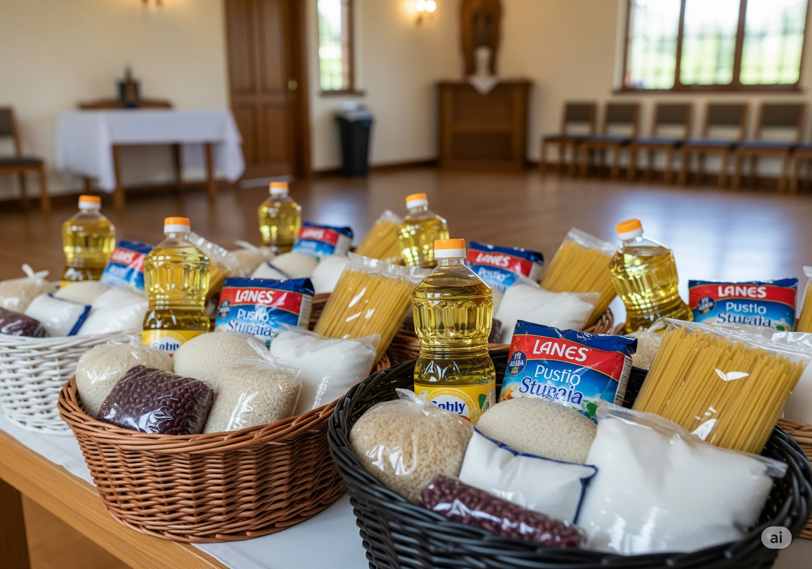
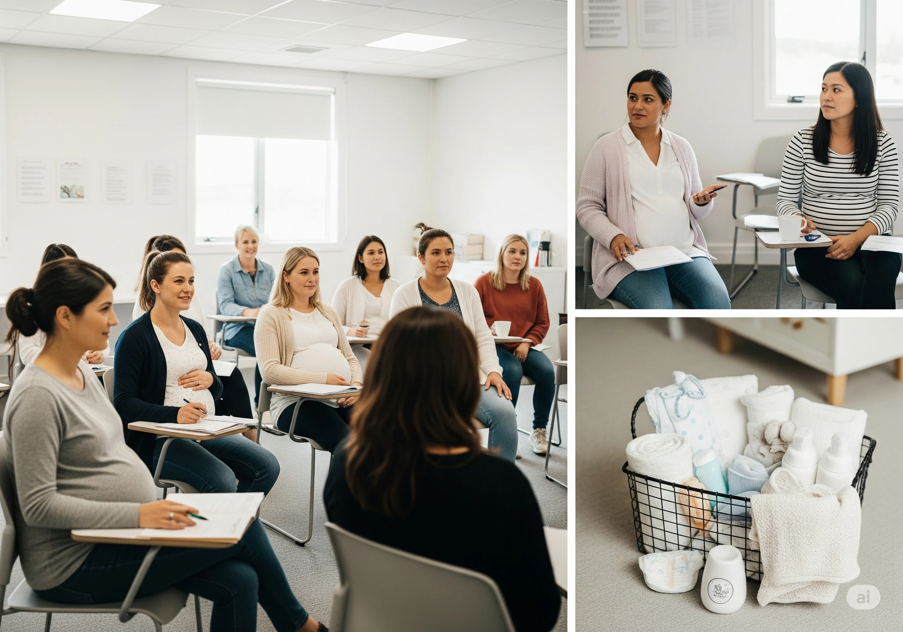

A prática da caridade é um pilar fundamental da Doutrina Espírita. Seguindo o princípio "Fora da caridade não há salvação", o Centro Assistencial Espírita Raphael Latorre desenvolve diversos projetos de assistência social para ajudar pessoas em situação de vulnerabilidade.
Conheça nossos projetos e saiba como você pode contribuir.

O programa de distribuição de cestas básicas auxilia famílias carentes cadastradas, fornecendo mensalmente alimentos essenciais para garantir a segurança alimentar.
Cada cesta contém itens como arroz, feijão, óleo, macarrão, açúcar, café, entre outros produtos não-perecíveis que garantem uma alimentação básica para uma família por aproximadamente um mês.
Atualmente, beneficiamos cerca de 50 famílias mensalmente com este programa.
O Brechó é uma das fontes de renda do Centro Assistencial Espírita Raphael Latorre. Comercializamos roupas, calçados, bolsas, utensílios domésticos, eletrônicos e livros em bom estado a preços acessíveis.
Toda a receita obtida com as vendas é revertida para a manutenção do Centro e para financiar nossos projetos de assistência social, como distribuição de cestas básicas e atendimento fraterno.
Aceitamos doações de: roupas, calçados, bolsas, utensílios domésticos, eletrônicos e livros em bom estado.
Como doar: As doações devem ser deixadas na secretaria do Centro nos horários de atendimento (Segunda a Sexta: 13h às 16h e 19h às 21h30).

O Atendimento Fraterno é um espaço de acolhimento e orientação espiritual para pessoas que estão passando por momentos difíceis, conflitos pessoais, familiares ou questões emocionais.
Oferecemos escuta acolhedora, amparo fraterno e orientações à luz da Doutrina Espírita, sempre com respeito, sigilo e carinho. O atendimento é realizado por voluntários capacitados e acontece quinzenalmente às terças-feiras.
Horário: Terças-feiras (quinzenal), 19:30h
Atendente: Érica Helena Rosa Lui
Importante: É necessário agendamento prévio.
"A assistência social que recebi do Centro Assistencial Espírita Raphael Latorre foi fundamental para mim em um momento muito difícil da minha vida. Além da ajuda material com cestas básicas e roupas para meus filhos, recebi palavras de conforto e apoio que me ajudaram a seguir em frente. Hoje estou em melhores condições e também ajudo como posso."
Há diversas formas de contribuir com os projetos de assistência social do Centro Assistencial Espírita Raphael Latorre:
Contribua com qualquer valor para ajudar na manutenção dos projetos assistenciais.
Banco: Exemplo
Agência: 0123
Conta: 12345-6
PIX: centro@exemplo.com.br
Doe alimentos não-perecíveis, roupas, calçados, utensílios domésticos, itens de higiene, etc.
Você pode entregar suas doações diretamente na sede do Centro nos horários de funcionamento.
Doe seu tempo e talentos para ajudar nos projetos assistenciais, desde a separação de doações até o atendimento às pessoas assistidas.
Preencha o formulário de contato informando sua disponibilidade.